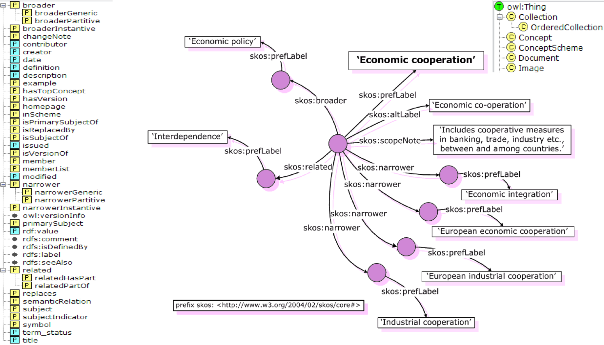

Example of RDF graph

Timofey Ermilov
Part 1:
Part 2:
Tim Ermilov is teaching Introduction to RDF course.
<course name="Introduction to RDF">
<lecturer>Tim Ermilov</lecturer>
</course>
Can you spot the problem in this representation?
Tim Ermilov is teaching Introduction to RDF course.
<course name="Introduction to RDF">
<lecturer>Tim Ermilov</lecturer>
</course>
<lecturer name="Tim Ermilov">
<teaches>Introduction to RDF</teaches>
</lecturer>
There is no standard way of assigning meaning to tag nesting.
A lecturer is a subclass of an academic staff member.
<academicStaffMember>Sören Auer</academicStaffMember>
<professor>Klaus-Peter Fähnrich</professor>
<course name=“Introduction to RDF">
<isTaughtBy>Tim Ermilov</isTaughtBy>
</course>
Retrieve all the members of the academic staff.
Example Xpath query: //academicStaffMember
Only result: Sören Auer.
Correct from the XML viewpoint
But semantically unsatisfactory.
Human readers would have also included Klaus-Peter Fähnrich and Tim Ermilov.
RDF makes semantic information machine accessible.
Scheme : Hierarchy [ ? Query ] [ # Fragment ]
Resource Description Framework
W3C Recommendation (http://www.w3.org/RDF)
RDF is a data model
for unique referencing to resources
for representing an instance data value
for representing a resource for which a URI or literal is not given
Used for the representation of data values
Viewed as strings
Interpretation is done by data type
Literals without data type will be treated as strings

Graphs can be representated in different ways
Commonly used:
List of (node-edge-node) triples
Literals can never be the starting point of edges in RDF graph
Edges of the RDF graph cannot be labeled with literals
Components of an RDF triple

Allowed assignments:
Node and edge identifiers are unique, so the original graph can be always reconstructed from triple-list
Turtle syntax:
Example:
<http://dbpedia.org/resource/Leipzig> <http://dbpedia.org/property/hasMayor> <http://dbpedia.org/resource/Burkhard_Jung> .
<http://dbpedia.org/resource/Leipzig> <http://www.w3.org/2000/01/rdf-schema#label> "Leipzig"@de .
<http://dbpedia.org/resource/Leipzig> <http://www.w3.org/2003/01/geo/wgs84_pos#lat> "51.333332"^^<http://www.w3.org/2001/XMLSchema#float> .
<http://dbpedia.org/resource/Leipzig> <http://www.w3.org/2003/01/geo/wgs84_pos#lon> "12.383333"^^<http://www.w3.org/2001/XMLSchema#float> .
Turtle prefixes can be defined:
@prefix rdf: <http://www.w3.org/1999/02/22-rdf-syntax-ns#> .
@prefix rdfs: <http://www.w3.org/2000/01/rdf-schema#> .
@prefix xsd: <http://www.w3.org/2001/XMLSchema#> .
@prefix dbr: <http://dbpedia.org/resource/> .
@prefix dbp: <http://dbpedia.org/property/> .
@prefix geo: <http://www.w3.org/2003/01/geo/wgs84_pos#> .
dbr:Leipzig dbp:hasMayor dbr:Burkhard_Jung .
dbr:Leipzig rdfs:label "Leipzig"@de .
dbr:Leipzig geo:lat "51.333332"^^xsd:float .
dbr:Leipzig geo:long "12.383333"^^xsd:float .
Triples with the same Subject can be combined:
@prefix rdf: <http://www.w3.org/1999/02/22-rdf-syntax-ns#> .
…
@prefix geo: <http://www.w3.org/2003/01/geo/wgs84_pos#> .
dbr:Leipzig dbp:hasMayor dbr:Burkhard_Jung ;
rdfs:label "Leipzig"@de ;
geo:lat "51.333332"^^xsd:float ;
geo:long "12.383333"^^xsd:float .
As can be triples with the same Subject and Predicate:
@prefix dbr: <http://dbpedia.org/resource/> .
@prefix dbp: <http://dbpedia.org/property/> .
dbr:Leipzig dbp:locatedIn dbr:Saxony, dbr:Germany ;
dbp:hasMayor dbr:Burkhard_Jung .
Turtle is intuitively readable and machine applicable
But there's better tool support and more programming libraries for XML
RDF/XML syntax has spread
Standard practice: if RDF data is published, RDF/XML is provided as one of serializations
Namespaces are used to disambiguate tagname (same as in XML)
RDF own tags have a default namespace identifier 'rdf'
<?xml version="1.0"?>
<rdf:RDF xmlns:rdf="http://www.w3.org/1999/02/22-rdf-syntax-ns#"
xmlns:rdfs="http://www.w3.org/2000/01/rdf-schema#"
xmlns:xsd= "http://www.w3.org/2001/XMLSchema#"
xmlns:dbp="http://dbpedia.org/property/"
xmlns:geo="http://www.w3.org/2003/01/geo/wgs84_pos#">
<rdf:Description rdf:about="http://dbpedia.org/resource/Leipzig">
<dbp:hasMayor rdf:resource="http://dbpedia.org/resource/Burkhard_Jung" />
<rdfs:label xml:lang="de">Leipzig</rdfs:label>
<geo:lat rdf:datatype="float">51.3333</geo:lat>
<geo:long rdf:datatype="float">12.3833</geo:long>
</rdf:Description>
</rdf:RDF>
rdf:Description element includes subject (URI as the value of the corresponding rdf:about attribute)
Each of the elements contained in rdf:Description is a predicate, which in turn contains the Object of the triple (via rdf:resource attribute)
<?xml version="1.0"?>
<rdf:RDF xmlns:rdf="http://www.w3.org/1999/02/22-rdf-syntax-ns#"
xmlns:rdfs="http://www.w3.org/2000/01/rdf-schema#"
xmlns:xsd= "http://www.w3.org/2001/XMLSchema#"
xmlns:dbp="http://dbpedia.org/property/"
xmlns:geo="http://www.w3.org/2003/01/geo/wgs84_pos#">
<rdf:Description rdf:about="http://dbpedia.org/resource/Leipzig">
<dbp:hasMayor rdf:resource="http://dbpedia.org/resource/Burkhard_Jung" />
<rdfs:label xml:lang="de">Leipzig</rdfs:label>
<geo:lat rdf:datatype="float">51.3333</geo:lat>
<geo:long rdf:datatype="float">12.3833</geo:long>
</rdf:Description>
</rdf:RDF>
Literals can be represented as text inside of the element
Allowed condensed version:
<?xml version="1.0"?>
<rdf:Description rdf:about="http://dbpedia.org/resource/Leipzig">
<dbr:name>Leipzig</dbr:name>
<dbp:hasMayor>
<rdf:Description rdf:about=„http://dbpedia.org/resource/Burkhard_Jung“>
<dbp:name>Burkhard Jung</dbp:name>
</rdf:Description>
</dbp:hasMayor>
<geo:lat rdf:datatype="float">51.3333</geo:lat>
<geo:long rdf:datatype="float">12.3833</geo:long>
</rdf:Description>
Alternatively (but semantically equivalent) literals can be representated as XML attributes
Attribute names are then the property URIs
Object URIs can be specified as the value of the rdf:resource attributes within a property tags
<rdf:Description rdf:about="http://dbpedia.org/resource/Leipzig"
dbp:name="Leipzig">
<geo:lat rdf:datatype="float">51.3333</geo:lat>
<geo:long rdf:datatype="float">12.3833</geo:long>
</rdf:Description>
<rdfDescription rdf:about="http://dbpedia.org/resource/Burkhard_Jung"
dbp:name="Burkhard Jung">
</rdf:Description>
Namespaces are essential, but in XML elements and attributes colons does not indicate namespaces
Problem:
it's not possible to us any XML namespaces possible in attribute values:
rdf:about="dbr:Leipzig"
"Workaround" via XML entities:
<!ENTITY dbr 'http://dbpedia.org/resource/'>
...
rdf:resource="&dbr;Leipzig"
Working with base URIs:
<rdf:RDF xmlns:rdf="http://www.w3.org/1999/02/22-rdf-syntax-ns#"
xml:base="http://dbpedia.org/resource/" >
<rdf:Description rdf:about="Leipzig">
<property:hasMayor rdf:resource="Burkhard_Jung" />
</rdf:Description
</rdf:RDF>
JSON = JavaScript Object Notation
Compact format for data exchange between applications
Valid JSON-Document is valid JavaScript
Programming language independent (a lot of parsers for most languages)
Produces less overhead than XML
An RDF/JSON object is formed from subject S, predicate P and object O:
{"S": {"P": [O] } }
The Object is represented as a JSON object with the following keys:
Must be one of "uri", "literal" or "bnode". Must be specified and must be lowercase.
Describes the lexical value of the object. Full URIs must be used.
Specifies the language of a literal value. Optional, but if supplied it must not be empty.
Specifies the datatype URI of the literal value. Also optional.
{"http://dbpedia.org/resource/Leipzig" : {
"http://dbpedia.org/property/hasMayor":
[{ "type":"uri", "value":"http://dbpedia.org/resource/Burkhard_Jung" }],
"http://www.w3.org/2000/01/rdf-schema#label":
[{ "type":"literal", "value":"Leipzig", "lang":"en" }],
"http://www.w3.org/2003/01/geo/wgs84_pos#lat":
[{ "type":"literal", "value":"51.3333",
"datatype":"http://www.w3.org/2001/XMLSchema#float" }]
"http://www.w3.org/2003/01/geo/wgs84_pos#lon":
[{ "type":"literal", "value":"12.3833",
"datatype":"http://www.w3.org/2001/XMLSchema#float" }]
}
}
RDFa = RDF in attributes
Was developed to embed RDF into XHTML
As an extension of XML-based XHTML uses UTF-8 and UTF-16
Supports IRIs
Since RDFa is embedded in XHTML, it creates a greater overhead than other serializations
The readability is reduced in comparison to Turtle
<?xml version="1.0" encoding="UTF-8"?>
<!DOCTYPE html PUBLIC "-//W3C//DTD XHTML+RDFa 1.0//EN"
"http://www.w3.org/MarkUp/DTD/xhtml-rdfa-1.dtd">
<html version="XHTML+RDFa 1.0" xml:lang="en" xmlns="http://www.w3.org/1999/xhtml"
xmlns:rdf="http://www.w3.org/1999/02/22-rdf-syntax-ns#"
xmlns:rdfs="http://www.w3.org/2000/01/rdf-schema#"
xmlns:xsd=" http://www.w3.org/2001/XMLSchema# "
xmlns:dbp="http://dbpedia.org/property/"
xmlns:geo="http://www.w3.org/2003/01/geo/wgs84_pos#">
<head><title>Leipzig</title></head>
<body about="http://dbpedia.org/resource/Leipzig">
<h1 property="rdfs:label" xml:lang="de">Leipzig</h1>
<p>Leipzig is a city in Germany. Leipzig's mayor is
<a href="Burkhard_Jung" rel="dbp:hasMayor">Burkhard Jung</a>. It is located
at latitude <span property="geo:lat" datatype="xsd:float">51.3333</span>
and longitude <span property="geo:long" datatype="xsd:float">12.3833</span>.
</p>
</body>
</html>
One pre-defined datatype: rdf:XMLLiteral
Recommended datatypes are XML Schema datatypes, e.g.:
xsd:decimal
Previously: untyped literals are treated as strings (e.g.: "02" < "100" < "11" < "2")
Typing allows better (semantic) approach to values
Data types are identified by URIs, and are in principle arbitrary
Syntax: "Data value"^^datatype-URI

In Turtle:
@prefix dbr: <http://dbpedia.org/resource/> .
@prefix geo: <http://www.w3.org/2003/01/geo/wgs84_pos#>.
@prefix xsd: <http://www.w3.org/2001/XMLSchema#> .
dbr:Leipzig geo:lat "51.333332"^^xsd:float ;
geo:long "12.383333"^^xsd:float .
In RDF/XML:
<?xml version="1.0"?>
<rdf:RDF xmlns:rdf="http://www.w3.org/1999/02/22-rdf-syntax-ns#"
xmlns:rdfs="http://www.w3.org/2000/01/rdf-schema#"
xmlns:geo="http://www.w3.org/2003/01/geo/wgs84_pos#">
<rdf:Description rdf:about="http://dbpedia.org/resource/Leipzig">
<geo:lat rdf:datatype="http://www.w3.org/2001/XMLSchema#float">51.3333</geo:lat>
<geo:long rdf:datatype="http://www.w3.org/2001/XMLSchema#float">12.3833</geo:long>
</rdf:Description>
Language information affect only untyped literals
Example:
<rdf:Description rdf:about="http://dbpedia.org/resource/Leipzig">
<rdfs:label xml:lang="de">Leipzig</rdfs:label>
<rdfs:label xml:lang="ru">Лейпциг</rdfs:label>
</rdf:Description>
Turtle:
@prefix rdfs: <http://www.w3.org/2000/01/rdf-schema#> .
http://dbpedia.org/resource/Leipzig rdfs:label "Leipzig"@de ;
rdfs:label "Лейпциг"@ru .
By RDF specification the following literals are different but often implemented as equal.
@prefix xsd: <http://www.w3.org/2001/XMLSchema#> .
@prefix rdfs: <http://www.w3.org/2000/01/rdf-schema#> .
@prefix dbr: <http://dbpedia.org/resource/> .
dbr:Leipzig rdfs:label "Leipzig" ;
"Leipzig"@de ;
"Leipzig"^^xsd:string .
Blank nodes (bnodes) represent a resource for which URI or literal is not given.
The resource represented by a blank node is also called an anonymous resource.

Syntax:
@prefix ex: <http://example.org/> .
ex:Chutney ex:hasIngridient; _:id1 .
_:id1 ex:Ingridient ex:greenMango ;
ex:amount "450g" .
Shortened with brackets:
@prefix ex: <http://example.org/> .
ex:Chutney ex:hasIngridient
[ ex:Ingridient ex:greenMango ;
ex:amount "450g" ] .
Syntax:
<rdf:Description rdf:about="http://example.org/Chutney">
<ex:hasIngridient rdf:nodeID="id1" />
</rdf:Description>
<rdf:Description rdf:nodeID="id1">
<ex:Ingridient rdf:resource="http://example.org/greenMango" />
<ex:amount>450g</ex:amount>
</rdf:description>
Shortened:
<rdf:Description rdf:about="http://example.org/Chutney">
<ex:hasIngridient rdf:parseType="Resource">
<ex:Ingridient rdf:resource="http://example.org/greenMango" />
<ex:amount>450g</ex:amount>
</ex:hasIngridient>
</rdf:description>
Common data structures to enumerate several resources, e.g. authors of the book.
Distinction between:
Can be modeled using existing means
List type is defined using rdf:type.
Ordered list (sequence)
Unordered set
Set of alternative options
@prefix ex: <http://example.org/> .
ex:SemanticWeb ex:Autor
( ex:Hitzler ex:Krötzsch ex:Rudolph ex:Sure ) .
<rdf:Description rdf:about="http://example.org/SemanticWeb">
<ex:Autoren rdf:parseType="Collecton">>
<rdf:li rdf:resource="http://www.example.org/Hitzler" />
<rdf:li rdf:resource="http://www.example.org/Krötzsch" />
<rdf:li rdf:resource="http://www.example.org/Rudolph" />
<rdf:li rdf:resource="http://www.example.org/Sure" />
</ex:Autoren>
</rdf:Description>
RDF provides universal way to encode data on the Web:
<http://example.org/SemanticWeb> <http://example.org/publishedBy> <http://www.springer.com/Publisher> .
Statements about individual resources and their relationships
Allows description of facts, but:
Questions:
Statements about classes.
e.g. publishers, individuals, organizations, etc.
Specification of the logical relationships between instances, classes and relationships
"Publishers are organizations."
"Only people write books."
In database terminology: Schema Knowledge
RDF Schema (RDFS): part of the W3C recommendations for RDF
Allows specification of schematic (or terminological) knowledge
Special RDF-vocabulary (i.e. every RDFS document is an RDF document)
Namespace (usually abbreviated as "rdfs:") - http://www.w3.org/2000/01/rdf-schema#
RDF Schema (RDFS):
Instances can be assigned to one or more classes:

Boddingtons rdf:type Ale .
Grafentrunk rdf:type Bock .
Hoegaarden rdf:type White .
Jever rdf:type Pilsner .
Typing of resources already used in RDF to identify lists:
Predicate rdf:type defines Object as type of Subject
Object perceived as both: a class and an instance.
ex:SemanticWeb rdf:type ex:Lecture .
Characterizes the "Semantic Web" as an instance of the (newly defined) class "Lecture"
Class membership is not exclusive:
ex:SemanticWeb rdf:type ex:Lecture, ex:Fun .
There's syntactically no clear distinction between instance and class identifiers
Example: http://www.un.org/#URI
Sometimes it's required to identify resource as a class
Possible by typing the relevant URI as rdfs:Class
ex:Lecture rdf:type rdfs:Class .
rdfs:Class is therefore the "Class of all classes" and thus also contains itself, i.e. the following triple is always true:
rdfs:Class rdf:type rdfs:Class .
Given triple:
ex:SemanticWeb rdf:type ex:Lecture .
Problem: finding instances of class ex:Course provides no result
Possibility: Adding triples
ex:SemanticWeb rdf:type ex:Course .
Solves the problem but only for a specific resource ex:SemanticWeb
Automatically adding all instances leads to unnecessarily large RDF documents
It makes sense that every lecture is a course, i.e. each instance of the class ex:Lecture is automatically an instance of class ex:Course.
Realized by the rdfs:subClassOf property:
ex:Lecture rdfs:subClassOf ex:Course .
"The Class of classes is a subclass of Class of classes."
rdfs:subClassOf property is reflexive, meaning that each class is a subclass of itself, so that e.g. applies:
ex:Lecture rdfs:subClassOf ex:Lecture .
Conversely, establishing the equality of two classes can be done through mutual relationship of classes, such as:
ex:Hospital rdfs:subClassOf ex:Clinic .
ex:Clinic rdfs:subClassOf ex:Hospital .
Usually descriptions are created not only for individual (sub)classes relationships, but for entire class hierarchies (or taxonomies), e.g.:
ex:Textbook rdfs:subClassOf ex:Book .
ex:Book rdfs:subClassOf ex:Substrate .
ex:Journal rdfs:subClassOf ex:Substrate .
rdfs:subClassOf property suggests that:
ex:Textbook rdfs:subClassOf ex:Substrate .
Class hierarchies are widely used in biology for different classifications, e.g. zoological classification of modern humans:
@prefix rdf:<http://www.w3.org/1999/02/22-rdf-syntax-ns#> .
@prefix rdfs:<http://www.w3.org/2000/01/rdf-schema#> .
@prefix ex:<http://www.example.com/#> .
ex:Animalia rdf:type rdfs:Class;
rdfs:label "Animals" .
ex:Chordates rdfs:subClassOf ex:Animalia;
rdfs:label "Chordates" .
ex:Mammalia rdfs:subClassOf ex:Chordates;
rdfs:label "Mammals" .
ex:Primates rdfs:subClassOf ex:Mammalia;
rdfs:label "Primates" .
ex:Hominidae rdfs:subClassOf ex:Primates;
rdfs:label "Hominids" .
ex:Homo rdfs:subClassOf ex:Primates;
rdfs:label "Homo" .
ex:HomoSapiens rdfs:subClassOf ex:Homo;
rdfs:label "Modern man"@de .
ex:Tim ex:isA ex:HomoSapiens .
Parallel to the set theory:
rdf:type corresponds to ∈ (element of)
rdfs:subClassOf corresponds to ⊆ (subset)
This justifies, for example, the reflexivity and transitivity of rdfs:subClassOf
rdfs:Resource
Class of all resources (i.e. all elements of the subject area)
rdf:Property
Class of all relations (= the resources that are referenced by predicate URIs)
rdf:List, rdf:Seq, rdf:Bag, rdf:Alt
Container classes for different types of lists
rdfs:ContainerMembershipProperty
Class of all properties that represent a container membership
rdf:XMLLiteral
Class of all values of the predefined data type XMLLiteral
rdfs:Literal
Class of literal values (i.e. contains all data types as subclasses)
rdfs:Datatype
Class of all data types (same as rdfs:Class is class of classes)
rdf:Statement
Class of RDF statements
Other name: relationships
Attention: properties attached to RDF(S) is not assigned (as in OOP) special classes
Property describes how two resources correlate
Mathematically often represented as a set of pairs:
Married = {(Adam and Eve), (Brad and Angelina), ...}
URI is identified as a property by appropriate typing:
ex:publishedBy rdf:type rdf:Property .
Similar to super-/subclasses.
Representated in RDFS using rdfs:subPropertyOf, e.g.:
ex:happilyMarried rdf:subPropertyOf rdf:married.
Then triples:
ex:Markus ex:happilyMarried ex:Anna .
allow to conclude that:
ex:Markus ex:married ex:Anna .
Property may make sense only when connecting certain resources, e.g. ex:publishedBy only connects publications with publishers.
For all a, b from the triple:
a ex:publishedBy b .
we can say that:
a rdf:type ex:Publication .
b rdf:type ex:Publisher .
Can be directly encoded in RDFS:
ex:publishedBy rdfs:domain ex:Publication .
ex:publishedBy rdfs:range ex:Publisher .
Also can be used to specify data types for literals:
ex:hasAge rdfs:range xsd:nonNegativeInteger .
Property restrictions are the only way to specify semantic relationships between property values and classes
Note: Property constraints are global.
ex:authorOf rdfs:range ex:Cookbook .
ex:authorOf rdfs:range ex:Book .
Therefore: domain and range should always use most generic class possible.
Properties are defined independently of classes:
ex:hasAlcoholicContent rdfs:subPropertyOf ex:hasContent .
ex:hasAlcoholicContent rdfs:domain ex:Beer .
ex:hasAlcoholicContent rdfs:range xsd:float .
ex:brews rdf:type owl:ObjectProperty .
ex:brews rdfs:domain ex:Brewery .
ex:brews rdfs:range ex:Beer .
Domain: links with one or more classes
Range: defines values that property may take

 FOAF (Friend-of-a-Friend)
FOAF (Friend-of-a-Friend)
Defines classes and properties for representing information about people and their relationships.
ex:Tim rdf:type foaf:Person .
ex:Tim currentProject <http://OntoWiki.net> .
ex:Tim foaf:homepage <http://bis.informatik.uni-leipzig.de/TimofeyErmilov> .
ex:Tim foaf:knows <http://sebastian.tramp.name/> .
Represent content from Blogs, Wikis, Forums, Mailinglists, Chats etc.

Supports the use of thesauri, classification schemes, subject heading systems and taxonomies.
Used for expressing metadata about RDF datasets.

Open-source and commercial versions as well as hosted services:

Our goal is to develop the github for graph data.
Arto Bendiken, 10/2010


Federated Knowledge Extraction Framework
The foundation of the University of Leipzig in 1409 initiated the city's development into a centre of German law and the publishing industry. The philosopher and mathematician Gottfried Leibniz was born in Leipzig in 1646, and attended the university from 1661–1666.
[] a ann:Annotation , scmsann:ORGANIZATION ;
scms:beginIndex "22"^^xsd:int ;
scms:endIndex "43"^^xsd:int ;
scms:means dbpedia:University_of_Leipzig ;
scms:source <http://ns.aksw.org/scms/tools/FOX> ;
ann:body "University of Leipzig"^^xsd:string .
This could be used to add
:mySource foaf:topic dbpedia:University_of_Leipzig
to the metadata of :mySource.

LIMES is a link discovery framework for the Web of Data

a free, open source ontology editor and knowledge-base framework.

A modelling environment for developing Semantic Web ontologies and building semantic applications

Sebastian [[knows::Tilo]] since two years.

/
#